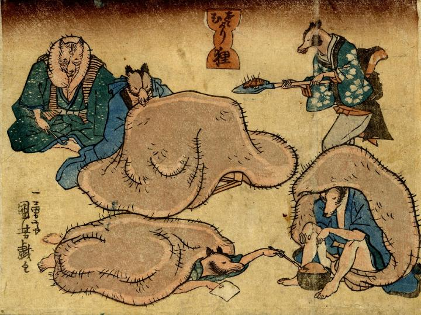

襟巻き、炬燵、布団など、狸たちが自らの陰嚢をたよりに体を温めている。
著作者：一勇斎国芳／出典：親書誌：U426_nichibunken_0258：さむがり狸初午のたぬき；サムガリタヌキハツウマノタヌキ／日付：2011／資源識別子：U426_nichibunken_0258_0001_0000
Copyright (c)2010- International Research Center for Japanese Studies, Kyoto, Japan. All rights reserved.